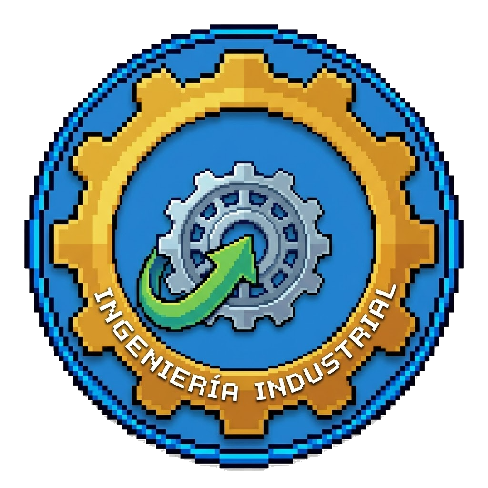
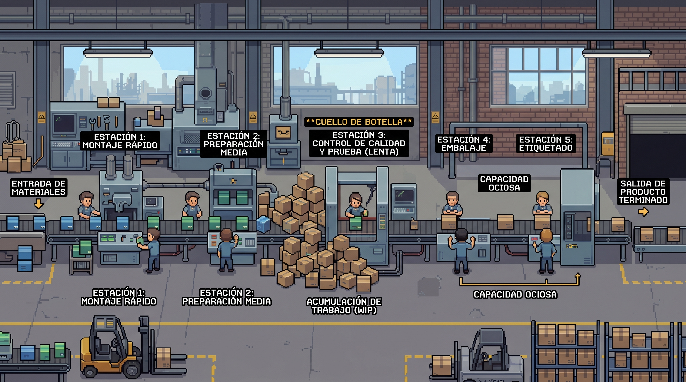
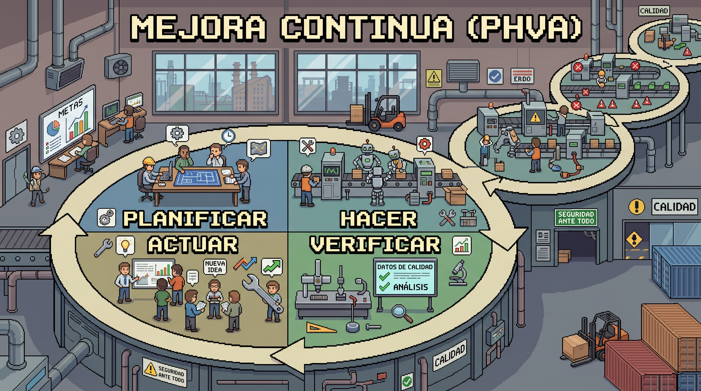
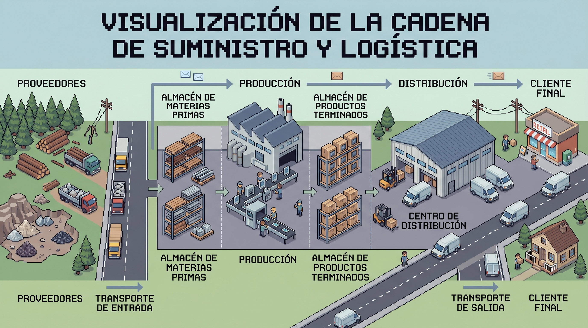

HUGUI
▼ CLIC
Estás a punto de explorar Ciudad Ingeniería, un mundo interactivo donde podrás descubrir las 7 carreras de ingeniería que ofrece la Universidad de América.
Este es tu espacio para conocer de primera mano qué hace cada ingeniería, su impacto en la sociedad, las líneas profesionales que puedes seguir y algunos conceptos clave que te ayudarán a elegir tu camino.
No existe una ingeniería "mejor" que otra. Cada una resuelve problemas diferentes del mundo real. ¡Explóralas todas antes de decidir!
Haz clic en cualquier ingeniería del tablero para acceder a su módulo completo.
Protege ecosistemas, gestiona recursos naturales y desarrolla soluciones sostenibles para los desafíos ambientales del planeta.
Diseña, analiza y fabrica sistemas mecánicos: desde motores y robots hasta estructuras que mueven al mundo.
Optimiza procesos, gestiona operaciones y mejora la productividad en todo tipo de organizaciones e industrias.
Investiga y desarrolla fuentes de energía renovable y convencional para garantizar un futuro energético sostenible.
Fusiona mecánica, electrónica y programación para crear sistemas inteligentes, automatización y robótica avanzada.
Explora, extrae y gestiona recursos hidrocarburíferos con tecnología de punta y responsabilidad ambiental.
Transforma materias primas en productos útiles mediante procesos químicos: fármacos, alimentos, materiales y más.

Diseña, implementa y mejora sistemas complejos que integran personas, materiales, equipos, energía e información para entregar valor real al cliente.
La rama de la ingeniería que diseña, implementa y mejora sistemas que integran personas, materiales, equipos, energía e información para producir bienes y servicios de forma eficiente.
Se aplica en fábricas, hospitales, bancos, aerolíneas, retail y startups tecnológicas.
Es el puente entre la estrategia y la operación. Diseña procesos que reducen costos, mejoran la calidad y hacen que las organizaciones entreguen valor real al cliente.
Afecta directamente productividad, tiempos de entrega y uso de recursos.
Un ingeniero industrial puede desempeñarse en muchas áreas. Estas son las más demandadas:
Planeación y control, ingeniería de métodos, estudio de tiempos y movimientos.
Control de procesos, Six Sigma, Lean, Kaizen y mejora continua.
Inventarios, almacenamiento, transporte, compras y planeación de demanda.
Datos, investigación de operaciones y gestión de proyectos.
Rediseño de procesos, transformación digital y estrategia operativa.
Una de las carreras con mayor demanda laboral del país, con presencia en casi todos los sectores.
Consigue empleo antes de graduarse o en los primeros seis meses.
COP mensuales, con crecimiento fuerte en los primeros años.
Vas a aprender los 3 conceptos fundamentales de la ingeniería industrial a través de un caso único y continuo: Cervecería UA, una cervecería artesanal ficticia que produce lotes medianos para supermercados, bares y eventos universitarios.
A lo largo de los 3 bloques vas a enfrentar retos encadenados: primero la planta no logra entregar pedidos, luego aparecen defectos de calidad y finalmente los proveedores fallan. Cada concepto te da las herramientas para resolver un reto distinto del mismo caso — y al final aplicarás todo en un reto interactivo.
Cuando veas el color morado dentro de un bloque, es el concepto teórico aplicado a Cervecería UA. Así identificas de inmediato el hilo conductor del caso mientras aprendes.
Construcción teórica del módulo basada en las siguientes referencias. Haz clic sobre cualquier tarjeta para descargar el PDF.
Teoría de restricciones (TOC) · Cuello de botella
La teoría de restricciones (TOC), formulada por Eliyahu Goldratt en los años 80, plantea que todo sistema tiene al menos una restricción que limita su desempeño global.
Un proceso avanza a la velocidad de su etapa más lenta. Esa etapa limitante se conoce como cuello de botella. Mejorarlo todo a la vez es menos efectivo que concentrarse en esa restricción principal.
Imagina una fila de estudiantes saliendo por una puerta angosta. Aunque el pasillo sea amplio, la salida completa depende de la puerta — no del espacio restante.
En una planta pasa lo mismo: la etapa más lenta o con menos capacidad define cuánto producto puede salir del sistema.

📍 El cuello de botella en acción. Esta planta tiene 5 estaciones en línea. La Estación 3 (Control de Calidad) es la etapa más lenta del proceso: antes de ella se acumula el inventario en proceso (WIP) formando una montaña de cajas, mientras las Estaciones 4 y 5 quedan ociosas esperando trabajo. El sistema completo produce al ritmo de esa única estación.
Goldratt propuso un método sistemático para mejorar cualquier proceso con restricciones. Se aplica en ciclo continuo:
Localizar la restricción que limita al sistema.
Sacarle el máximo provecho sin invertir más dinero.
El resto del sistema se adapta al ritmo de la restricción.
Aumentar la capacidad de la restricción si hace falta.
Volver al paso 1: aparecerá una nueva restricción.
No todos los cuellos son iguales. Saber de qué tipo es ayuda a decidir cómo atacarlo:
Recursos físicos insuficientes: máquinas lentas, mano de obra limitada, materia prima. Los más visibles.
Reglas o procedimientos que frenan el flujo innecesariamente. Ej.: "todo lote debe esperar inspección completa".
La demanda es menor que la capacidad. El mercado mismo se convierte en el cuello del sistema.
T · Throughput: velocidad a la que el sistema genera dinero mediante ventas.
I · Inventario (WIP): dinero "atascado" en materias primas y producto en proceso.
OE · Gastos operativos: dinero para convertir inventario en throughput.
Meta: maximizar T, minimizar I y OE.
El impacto sobre el sistema depende de dónde esté el problema. Mejorar una etapa que no es cuello apenas cambia el resultado total.
Primero identifica la restricción principal. Luego enfoca los recursos y esfuerzos ahí — no antes.
El cuello de botella se ve: acumulación, espera o capacidad insuficiente. No asumas; mide con datos reales.
Cuando resuelves un cuello, aparece otro en otra etapa. TOC es un ciclo, no un evento único.
La cervecería acumula pedidos que no logra entregar. La planta trabaja sin parar, pero algo no cuadra: los tiempos se alargan y las cajas se quedan en el taller.
¿Cuál es la etapa del proceso que está frenando al sistema completo? Apliquemos TOC para encontrarla.
Requiere tiempo biológico fijo (7-14 días) y tanques disponibles. Si llega más mosto del que los tanques pueden recibir, la producción se acumula antes de esta etapa.
El cuello más difícil de atacar: duplicar tanques es caro y el tiempo biológico no se puede "acelerar".
Si la cerveza ya está lista pero la línea de llenado, tapado y etiquetado procesa menos unidades por hora que las etapas previas, el producto se detiene aquí.
Más fácil de atacar: otro turno, calibrar la máquina o añadir una línea secundaria son opciones reales.
Salida real = 200 L/h. No 500 ni 450. Invertir en mejorar la molienda no cambia nada mientras fermentación siga siendo la restricción.
Si solo tuvieras presupuesto para mejorar una etapa, ¿cuál elegirías y por qué?
¿Estás pensando en la restricción real o en una etapa que solo "parece" lenta?
Mejora continua · Ciclo PHVA
Un sistema de gestión de calidad busca que los procesos y resultados cumplan requisitos de manera consistente — y que la organización mejore con el tiempo.
La mejora continua es la práctica de revisar cómo se trabaja, detectar fallas, probar cambios y comprobar si el resultado mejora. No es un evento único: es un proceso iterativo que nunca termina.
Pequeños ajustes constantes superan, con el tiempo, a los grandes cambios puntuales. Esa es la esencia del Kaizen.

🔄 El ciclo PHVA en acción. Cada vuelta del ciclo —Planificar, Hacer, Verificar, Actuar— deja el proceso un poco mejor que antes. No es un círculo cerrado: es una espiral ascendente donde cada iteración construye sobre la anterior. Esa acumulación de mejoras pequeñas y constantes es la esencia de la mejora continua.
Cuatro pasos que se repiten una y otra vez, cada uno alimenta al siguiente:
Definir el problema y fijar una meta medible. Ej.: "reducir botellas con llenado incorrecto del 8% al 2% en un mes".
Probar un ajuste a pequeña escala. Calibrar la llenadora o cambiar el instructivo del turno.
Medir si el número de botellas rechazadas bajó realmente. Comparar con la meta, no con la percepción.
Si funcionó, estandarizar la mejora. Si no, ajustar hipótesis y volver a planificar.
Ver la operación como procesos conectados, no áreas aisladas. Una falla en una etapa siempre afecta a otras más adelante.
La mejora no es un evento: es una rutina. Cada ciclo deja el proceso un poco mejor que antes, y el resultado se acumula.
Herramientas sencillas que cualquier ingeniero industrial usa para analizar y mejorar procesos:
También llamado "espina de pescado". Sirve para encontrar causas posibles de un problema agrupadas por categoría (mano de obra, método, máquina, material…).
La regla 80/20. Un gráfico de barras ordenado que muestra que pocas causas concentran la mayor parte de los problemas.
Preguntar "¿por qué?" cinco veces seguidas para llegar a la causa raíz y no quedarse en el síntoma.
Muestra cómo se distribuyen los datos. Útil para ver si un proceso está centrado o disperso.
Una planilla simple para contar cuántas veces aparece cada tipo de defecto durante un turno.
Representa visualmente cada paso del proceso. Hace evidentes retrasos, cuellos y pasos innecesarios.
La calidad cuesta, pero la no-calidad cuesta mucho más. Se agrupan en 4 tipos:
Capacitar, mantener equipos, diseñar bien. Lo más barato a largo plazo.
Inspecciones, pruebas, auditorías. Detectan antes de entregar al cliente.
Reprocesos, mermas, tiempo perdido. Fallas detectadas antes del cliente.
Devoluciones, quejas, pérdida de reputación. El más caro de todos.
La calidad no es un "lujo" ni solo una inspección al final.
Un problema repetido es señal de que el proceso necesita rediseño, no solo el producto.
Resolvimos el cuello de botella y ahora producimos más cerveza. Pero aparece otro problema: los lotes salen con etiquetas torcidas y nivel de llenado fuera del rango esperado.
¿Cómo atacamos la causa raíz y no solo el síntoma? Es hora de aplicar mejora continua.
Un día aparece una no-calidad evidente: un lote sale con etiquetas torcidas y nivel de llenado fuera del rango. La respuesta correcta no es solo desechar las unidades defectuosas — es entender la causa y prevenir que se repita.
Un lote de 1.000 cajas tiene 80 botellas mal llenadas. ¿Qué harías primero: rechazar el lote, recalibrar la máquina o investigar la causa raíz?
¿Qué herramienta de las 6 usarías para decidir?
Lo que se mide, se puede mejorar:
Botellas defectuosas respecto al total producido.
Minutos promedio que la línea está detenida por fallas o ajustes.
Porcentaje entregado con todas las referencias correctas.
Unidades que el cliente devuelve por daño o presentación.
Abastecimiento · Inventario · Transporte · Distribución
🚚 LOGÍSTICA
Coordina el movimiento físico de materiales y productos: abastecimiento, inventario, almacenamiento, transporte y entrega al cliente.
🔗 CADENA DE SUMINISTRO
Es un concepto más amplio: además de la logística, incluye compras, desarrollo de producto, producción y pronóstico de demanda.
Regla mnemónica: la cadena mira el sistema completo; la logística se enfoca en mover y coordinar.

🔗 La cadena de suministro completa. Desde los proveedores que entregan materias primas, pasando por la planta que transforma, el almacenamiento, el transporte y la distribución hasta el cliente final. La logística es la que hace que cada eslabón se conecte en el momento, lugar y cantidad correctos.
La logística conecta el antes, el durante y el después de fabricar. Una falla en cualquier fase rompe todo el flujo:
Abastecimiento. Planear compras, negociar con proveedores, gestionar tiempos de entrega y mantener inventario suficiente.
Logística interna. Almacenamiento, movimiento entre etapas, control del inventario en proceso, disponibilidad de insumos.
Distribución. Consolidar pedidos, preparar despacho, elegir rutas y cumplir los tiempos comprometidos con el cliente.
Todo lo que entra a la planta: compras, recepción, almacenamiento de materias primas y relación con proveedores.
Su métrica clave: disponibilidad de materiales cuando se necesitan.
Todo lo que sale de la planta: preparación de pedidos, despacho, transporte y entrega al cliente final.
Su métrica clave: nivel de servicio al cliente (tiempo + exactitud).
Lo que regresa: devoluciones, garantías, reciclaje de envases y manejo de defectuosos.
Cada vez más relevante por sostenibilidad y regulación.
Las decisiones logísticas ocurren en tres niveles. Saber en cuál estás ayuda a pensar con el horizonte correcto:
¿Dónde ubicar almacenes? ¿Con qué proveedores trabajar? ¿Qué canales de distribución? Decisiones de largo plazo y alto impacto.
¿Cuánto inventario de seguridad? ¿Qué rutas de transporte? ¿Cómo pronosticar demanda del trimestre?
¿Qué pedidos priorizar hoy? ¿Qué camión sale primero? ¿Cómo reaccionar ante un retraso del proveedor?
Quién suministra qué, en qué plazos y condiciones.
Cuánto hay disponible en cada punto de la operación.
Buffer para absorber imprevistos y picos de demanda.
Cómo se guardan los productos (FIFO, FEFO, LIFO).
Cómo y cuándo se mueven los materiales.
Cómo llegan los productos al cliente final.
Rastrear cada unidad desde el origen.
Pedido completo, a tiempo y correcto.
La logística busca tener el:
✓ material correcto
✓ en el lugar correcto
✓ en el momento correcto
✓ en la cantidad adecuada
Ni más, ni menos, ni después.
Las cuatro métricas que cualquier operación logística debería medir:
% de pedidos entregados completos y a tiempo. El indicador de servicio más usado.
Días entre que el cliente pide y recibe. Más corto = más ágil y más competitivo.
% de unidades entregadas sobre lo solicitado. Mide quiebres de stock.
Cuántas veces se vacía y rellena el inventario al año. Alta = eficiencia.
El proceso fluye y la calidad es sólida. Pero si un proveedor no entrega malta a tiempo, o no hay transporte para el despacho del viernes, nada de lo anterior importa.
¿Cómo coordinamos el flujo completo — de proveedor a cliente final?
Planear compras de malta, lúpulo, levadura, envases y etiquetas. Una mala coordinación aquí detiene la producción aunque la planta esté lista.
Movimiento de mosto entre tanques, disponibilidad de botellas en la línea de envasado y control del producto en proceso entre etapas.
Consolidar pedidos de supermercados, bares y eventos universitarios. Elegir rutas y cumplir fechas sin romper la cadena de frío.
Un proveedor de botellas se retrasa dos días, hay alta demanda de fin de semana y el almacén tiene inventario limitado.
¿Qué harías primero: reprogramar producción, priorizar clientes, cambiar presentación o buscar proveedor alterno?